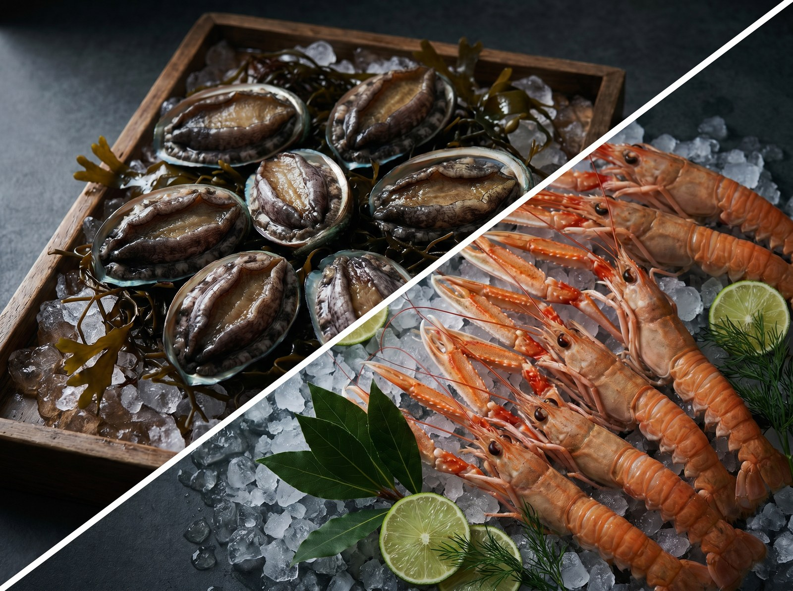
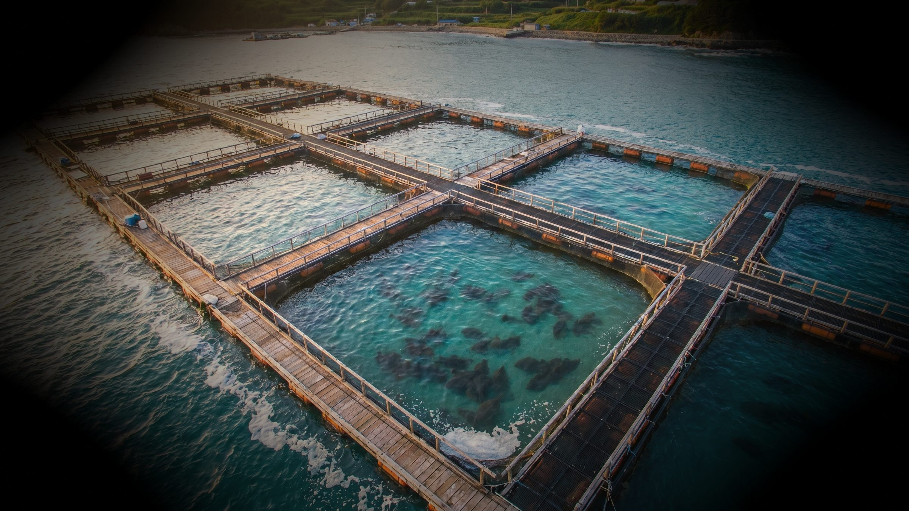
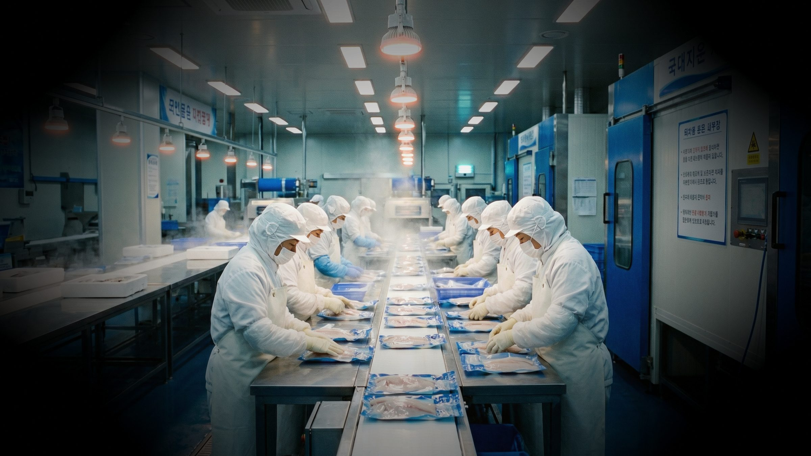
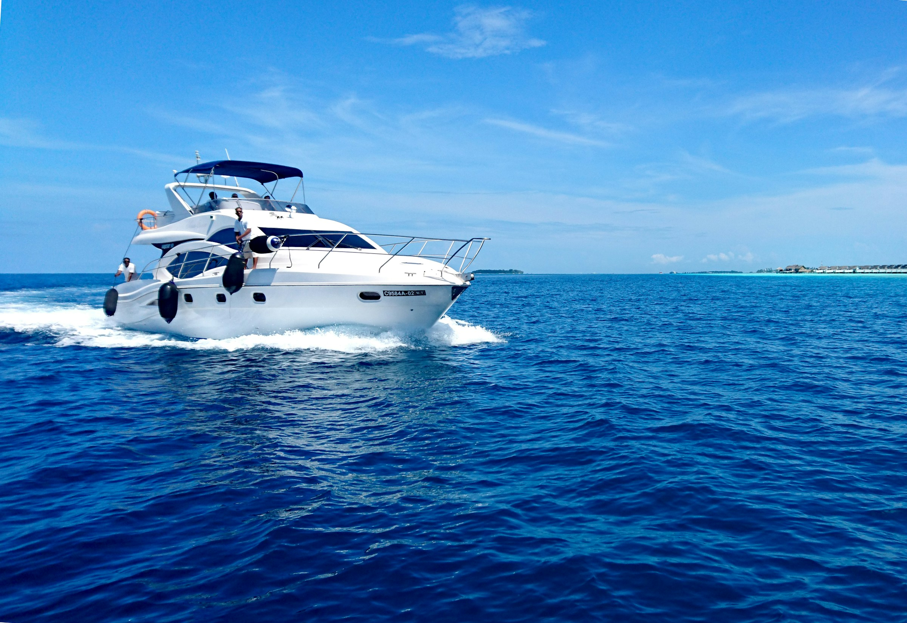

B.01

농수산물·냉동 식자재 유통
제주 본사에서 완도 가공·포장·발송 거점을 거쳐 수도권 노량진 수산시장과 강원도 농협 하나로마트 매장까지 직송하는 자체 유통 네트워크. 활어, 냉동, 가공 식자재를 산지에서 식탁까지 무결점으로 전달합니다.
금호글로벌은 제주도 화산섬의 현무암 해안과 맑은 바다에서 시작합니다. 우리는 자연이 준 자원을 가장 정직한 방식으로 기르고, 그 신선함을 전국 식탁까지 가장 빠르게 전달합니다.
From sea to table. From Jeju, to every table.

제주 본사에서 완도 가공·포장·발송 거점을 거쳐 수도권 노량진 수산시장과 강원도 농협 하나로마트 매장까지 직송하는 자체 유통 네트워크. 활어, 냉동, 가공 식자재를 산지에서 식탁까지 무결점으로 전달합니다.

제주 화산섬의 청정 해역과 완도 연안에서 자연 해면과 순환 여과 시스템을 결합한 하이브리드 양식장. 연어와 도다리만을 품질과 안전을 기준으로 길러냅니다.

완도 가공공장의 위생 등급 시설에서 즉시 손질·진공포장·냉동 처리. 산지에서 발송까지 콜드체인이 끊기지 않는 일관 시스템으로 온라인·오프라인 어디서나 같은 신선도를 만날 수 있습니다.

산지에서 가공·포장·발송까지 끊기지 않는 흐름,
그리고 전국 유통 거점으로 이어지는 더 넓은 식탁.
제주 본사에서 가공한 신선한 식자재를 완도 생산·포장·발송 거점으로 모은 뒤, 강원도 고성·충북 청주·경기 양평 등 3개 농협 하나로마트 매장과 서울 노량진 수산시장을 비롯한 수도권 전통시장으로 보냅니다. 금호글로벌의 유통망은 앞으로도 계속 전국으로 넓혀갑니다.
금호글로벌이 직접 기르고 검증한 농수산물. 제주 본사와 완도 가공공장을 거친 신선한 식자재를 중간 유통 없이 가장 빠르게 만나는 자사몰.
제주특별자치도 제주시
애월해안로 000, 금호빌딩
전라남도 완도군
가공·포장·발송 공장
T +82 64 000 0000
E hello@kumho-global.com
농협 하나로마트·전통시장
납품·유통 문의
미디어·제휴·IR 관련
press@kumho-global.com